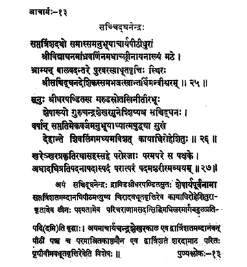

13. आचार्य - 13 - सच्चिद्घनेन्द्रः
सप्तत्रिंशदशो ••• मन्वीश्वरम् ॥ २५ ॥
सूनुः श्रीधरपण्डितस्य ••• रोहेशितुः ॥ २६ ॥
खरेऽखर ••• शरीरमव्ययम् ॥ २७ ॥
Then, the preceptor Śrī Cidghana, having governed or held the responsibilities of Ācārya Pīṭha for thirty-seven years, placed his disciple Śrī Vidyāghana, who was known as Śrī Nāyana in Pūrvāśrama before initiation, in the Maṭha; adhering to ascetic principles, wandering like a child, he vanished in the divine form of Īśvara.
Śrī Sacchidānanda, named Śeṣa (before initiation), son of Śrīdhrapaṇḍita, born on the banks of river Garuḍa, disciple of Preceptor Candraśekahara having enjoyed the bliss through spiritual practices for sixty-nine years, and at the end of life entered into the Śivaliṅga - Kāyādhirohaneśvara.
The great preceptor, the transcendental, immaculate attained the supreme state devoid of pains, beyond everything, imperishable and infinite on the first day of the dark fortnight in the month of Mārgaśīrṣa in the year Khara.
